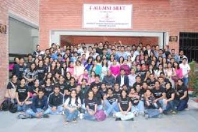

Alumni Meets

Near about 500 students have passed out from the Institute, since its inception. Many of our alumni are serving the society as professionals in one-way or the other different countries across the globe.
In order to provide platform for better interaction between the alumni, existing students and the faculty members, BVICAM conducts an annual Alumni Meet. This Alumni Meet is organized in the month of March annually in the Institute’s premises. The occasion is graced by the alumni ranging across various batches of MCA Programme of the Institute. This is the occasion when the alumni meet and spend some nostalgic time together.